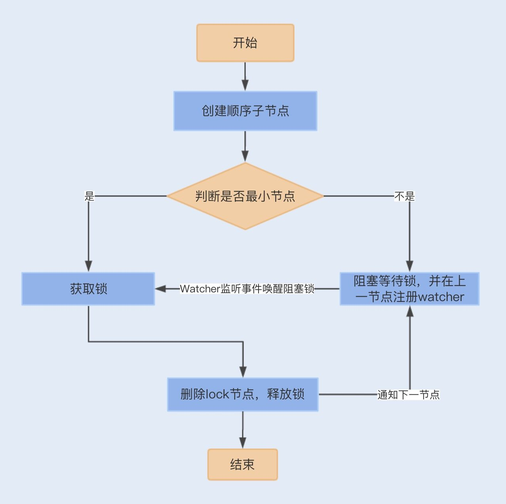

- 00 开篇词你为什么需要学习并发编程？.md.html
- 01 如何制定性能调优标准？.md.html
- 02 如何制定性能调优策略？.md.html
- 03 字符串性能优化不容小觑，百M内存轻松存储几十G数据.md.html
- 04 慎重使用正则表达式.md.html
- 05 ArrayList还是LinkedList？使用不当性能差千倍.md.html
- 06 Stream如何提高遍历集合效率？.md.html
- 07 深入浅出HashMap的设计与优化.md.html
- 08 网络通信优化之IO模型：如何解决高并发下IO瓶颈？.md.html
- 09 网络通信优化之序列化：避免使用Java序列化.md.html
- 10 网络通信优化之通信协议：如何优化RPC网络通信？.md.html
- 11 答疑课堂：深入了解NIO的优化实现原理.md.html
- 12 多线程之锁优化（上）：深入了解Synchronized同步锁的优化方法.md.html
- 13 多线程之锁优化（中）：深入了解Lock同步锁的优化方法.md.html
- 14 多线程之锁优化（下）：使用乐观锁优化并行操作.md.html
- 15 多线程调优（上）：哪些操作导致了上下文切换？.md.html
- 16 多线程调优（下）：如何优化多线程上下文切换？.md.html
- 17 并发容器的使用：识别不同场景下最优容器.md.html
- 18 如何设置线程池大小？.md.html
- 19 如何用协程来优化多线程业务？.md.html
- 20 磨刀不误砍柴工：欲知JVM调优先了解JVM内存模型.md.html
- 21 深入JVM即时编译器JIT，优化Java编译.md.html
- 22 如何优化垃圾回收机制？.md.html
- 23 如何优化JVM内存分配？.md.html
- 24 内存持续上升，我该如何排查问题？.md.html
- 25 答疑课堂：模块四热点问题解答.md.html
- 26 单例模式：如何创建单一对象优化系统性能？.md.html
- 27 原型模式与享元模式：提升系统性能的利器.md.html
- 28 如何使用设计模式优化并发编程？.md.html
- 29 生产者消费者模式：电商库存设计优化.md.html
- 30 装饰器模式：如何优化电商系统中复杂的商品价格策略？.md.html
- 31 答疑课堂：模块五思考题集锦.md.html
- 32 MySQL调优之SQL语句：如何写出高性能SQL语句？.md.html
- 33 MySQL调优之事务：高并发场景下的数据库事务调优.md.html
- 34 MySQL调优之索引：索引的失效与优化.md.html
- 35 记一次线上SQL死锁事故：如何避免死锁？.md.html
- 36 什么时候需要分表分库？.md.html
- 37 电商系统表设计优化案例分析.md.html
- 38 数据库参数设置优化，失之毫厘差之千里.md.html
- 39 答疑课堂：MySQL中InnoDB的知识点串讲.md.html
- 41 如何设计更优的分布式锁？.md.html
- 42 电商系统的分布式事务调优.md.html
- 43 如何使用缓存优化系统性能？.md.html
- 44 记一次双十一抢购性能瓶颈调优.md.html
- 加餐 什么是数据的强、弱一致性？.md.html
- 加餐 推荐几款常用的性能测试工具.md.html
- 答疑课堂：模块三热点问题解答.md.html
- 结束语 栉风沐雨，砥砺前行！.md.html
41 如何设计更优的分布式锁？
你好，我是刘超。
从这一讲开始，我们就正式进入最后一个模块的学习了，综合性实战的内容来自我亲身经历过的一些案例，其中用到的知识点会相对综合，现在是时候跟我一起调动下前面所学了！
去年双十一，我们的游戏商城也搞了一波活动，那时候我就发现在数据库操作日志中，出现最多的一个异常就是 Interrupted Exception 了，几乎所有的异常都是来自一个校验订单幂等性的 SQL。
因为校验订单幂等性是提交订单业务中第一个操作数据库的，所以幂等性校验也就承受了比较大的请求量，再加上我们还是基于一个数据库表来实现幂等性校验的，所以出现了一些请求事务超时，事务被中断的情况。其实基于数据库实现的幂等性校验就是一种分布式锁的实现。
那什么是分布式锁呢，它又是用来解决哪些问题的呢？
在 JVM 中，在多线程并发的情况下，我们可以使用同步锁或 Lock 锁，保证在同一时间内，只能有一个线程修改共享变量或执行代码块。但现在我们的服务基本都是基于分布式集群来实现部署的，对于一些共享资源，例如我们之前讨论过的库存，在分布式环境下使用 Java 锁的方式就失去作用了。
这时，我们就需要实现分布式锁来保证共享资源的原子性。除此之外，分布式锁也经常用来避免分布式中的不同节点执行重复性的工作，例如一个定时发短信的任务，在分布式集群中，我们只需要保证一个服务节点发送短信即可，一定要避免多个节点重复发送短信给同一个用户。
因为数据库实现一个分布式锁比较简单易懂，直接基于数据库实现就行了，不需要再引入第三方中间件，所以这是很多分布式业务实现分布式锁的首选。但是数据库实现的分布式锁在一定程度上，存在性能瓶颈。
接下来我们一起了解下如何使用数据库实现分布式锁，其性能瓶颈到底在哪，有没有其它实现方式可以优化分布式锁。
数据库实现分布式锁
首先，我们应该创建一个锁表，通过创建和查询数据来保证一个数据的原子性：
CREATE TABLE `order` (
`id` int(11) NOT NULL AUTO_INCREMENT,
`order_no` int(11) DEFAULT NULL,
`pay_money` decimal(10, 2) DEFAULT NULL,
`status` int(4) DEFAULT NULL,
`create_date` datetime(0) DEFAULT NULL,
`delete_flag` int(4) DEFAULT NULL,
PRIMARY KEY (`id`) USING BTREE,
INDEX `idx_status`(`status`) USING BTREE,
INDEX `idx_order`(`order_no`) USING BTREE
) ENGINE = InnoDB
其次，如果是校验订单的幂等性，就要先查询该记录是否存在数据库中，查询的时候要防止幻读，如果不存在，就插入到数据库，否则，放弃操作。
select id from `order` where `order_no`= 'xxxx' for update
最后注意下，除了查询时防止幻读，我们还需要保证查询和插入是在同一个事务中，因此我们需要申明事务，具体的实现代码如下：
@Transactional
public int addOrderRecord(Order order) {
if(orderDao.selectOrderRecord(order)==null){
int result = orderDao.addOrderRecord(order);
if(result>0){
return 1;
}
}
return 0;
}
到这，我们订单幂等性校验的分布式锁就实现了。我想你应该能发现为什么这种方式会存在性能瓶颈了。我们在[第 34 讲]中讲过，在 RR 事务级别，select 的 for update 操作是基于间隙锁 gap lock 实现的，这是一种悲观锁的实现方式，所以存在阻塞问题。
因此在高并发情况下，当有大量的请求进来时，大部分的请求都会进行排队等待。为了保证数据库的稳定性，事务的超时时间往往又设置得很小，所以就会出现大量事务被中断的情况。
除了阻塞等待之外，因为订单没有删除操作，所以这张锁表的数据将会逐渐累积，我们需要设置另外一个线程，隔一段时间就去删除该表中的过期订单，这就增加了业务的复杂度。
除了这种幂等性校验的分布式锁，有一些单纯基于数据库实现的分布式锁代码块或对象，是需要在锁释放时，删除或修改数据的。如果在获取锁之后，锁一直没有获得释放，即数据没有被删除或修改，这将会引发死锁问题。
Zookeeper 实现分布式锁
除了数据库实现分布式锁的方式以外，我们还可以基于 Zookeeper 实现。Zookeeper 是一种提供“分布式服务协调“的中心化服务，正是 Zookeeper 的以下两个特性，分布式应用程序才可以基于它实现分布式锁功能。
**顺序临时节点：**Zookeeper 提供一个多层级的节点命名空间（节点称为 Znode），每个节点都用一个以斜杠（/）分隔的路径来表示，而且每个节点都有父节点（根节点除外），非常类似于文件系统。
节点类型可以分为持久节点（PERSISTENT ）、临时节点（EPHEMERAL），每个节点还能被标记为有序性（SEQUENTIAL），一旦节点被标记为有序性，那么整个节点就具有顺序自增的特点。一般我们可以组合这几类节点来创建我们所需要的节点，例如，创建一个持久节点作为父节点，在父节点下面创建临时节点，并标记该临时节点为有序性。
**Watch 机制：**Zookeeper 还提供了另外一个重要的特性，Watcher（事件监听器）。ZooKeeper 允许用户在指定节点上注册一些 Watcher，并且在一些特定事件触发的时候，ZooKeeper 服务端会将事件通知给用户。
我们熟悉了 Zookeeper 的这两个特性之后，就可以看看 Zookeeper 是如何实现分布式锁的了。
首先，我们需要建立一个父节点，节点类型为持久节点（PERSISTENT） ，每当需要访问共享资源时，就会在父节点下建立相应的顺序子节点，节点类型为临时节点（EPHEMERAL），且标记为有序性（SEQUENTIAL），并且以临时节点名称 + 父节点名称 + 顺序号组成特定的名字。
在建立子节点后，对父节点下面的所有以临时节点名称 name 开头的子节点进行排序，判断刚刚建立的子节点顺序号是否是最小的节点，如果是最小节点，则获得锁。
如果不是最小节点，则阻塞等待锁，并且获得该节点的上一顺序节点，为其注册监听事件，等待节点对应的操作获得锁。
当调用完共享资源后，删除该节点，关闭 zk，进而可以触发监听事件，释放该锁。

以上实现的分布式锁是严格按照顺序访问的并发锁。一般我们还可以直接引用 Curator 框架来实现 Zookeeper 分布式锁，代码如下：
InterProcessMutex lock = new InterProcessMutex(client, lockPath);
if ( lock.acquire(maxWait, waitUnit) )
{
try
{
// do some work inside of the critical section here
}
finally
{
lock.release();
}
}
Zookeeper 实现的分布式锁，例如相对数据库实现，有很多优点。Zookeeper 是集群实现，可以避免单点问题，且能保证每次操作都可以有效地释放锁，这是因为一旦应用服务挂掉了，临时节点会因为 session 连接断开而自动删除掉。
由于频繁地创建和删除结点，加上大量的 Watch 事件，对 Zookeeper 集群来说，压力非常大。且从性能上来说，其与接下来我要讲的 Redis 实现的分布式锁相比，还是存在一定的差距。
Redis 实现分布式锁
相对于前两种实现方式，基于 Redis 实现的分布式锁是最为复杂的，但性能是最佳的。
大部分开发人员利用 Redis 实现分布式锁的方式，都是使用 SETNX+EXPIRE 组合来实现，在 Redis 2.6.12 版本之前，具体实现代码如下：
public static boolean tryGetDistributedLock(Jedis jedis, String lockKey, String requestId, int expireTime) {
Long result = jedis.setnx(lockKey, requestId);// 设置锁
if (result == 1) {// 获取锁成功
// 若在这里程序突然崩溃，则无法设置过期时间，将发生死锁
jedis.expire(lockKey, expireTime);// 通过过期时间删除锁
return true;
}
return false;
}
这种方式实现的分布式锁，是通过 setnx() 方法设置锁，如果 lockKey 存在，则返回失败，否则返回成功。设置成功之后，为了能在完成同步代码之后成功释放锁，方法中还需要使用 expire() 方法给 lockKey 值设置一个过期时间，确认 key 值删除，避免出现锁无法释放，导致下一个线程无法获取到锁，即死锁问题。
如果程序在设置过期时间之前、设置锁之后出现崩溃，此时如果 lockKey 没有设置过期时间，将会出现死锁问题。
在 Redis 2.6.12 版本后 SETNX 增加了过期时间参数：
private static final String LOCK_SUCCESS = "OK";
private static final String SET_IF_NOT_EXIST = "NX";
private static final String SET_WITH_EXPIRE_TIME = "PX";
/**
* 尝试获取分布式锁
* @param jedis Redis 客户端
* @param lockKey 锁
* @param requestId 请求标识
* @param expireTime 超期时间
* @return 是否获取成功
*/
public static boolean tryGetDistributedLock(Jedis jedis, String lockKey, String requestId, int expireTime) {
String result = jedis.set(lockKey, requestId, SET_IF_NOT_EXIST, SET_WITH_EXPIRE_TIME, expireTime);
if (LOCK_SUCCESS.equals(result)) {
return true;
}
return false;
}
我们也可以通过 Lua 脚本来实现锁的设置和过期时间的原子性，再通过 jedis.eval() 方法运行该脚本：
// 加锁脚本
private static final String SCRIPT_LOCK = "if redis.call('setnx', KEYS[1], ARGV[1]) == 1 then redis.call('pexpire', KEYS[1], ARGV[2]) return 1 else return 0 end";
// 解锁脚本
private static final String SCRIPT_UNLOCK = "if redis.call('get', KEYS[1]) == ARGV[1] then return redis.call('del', KEYS[1]) else return 0 end";
虽然 SETNX 方法保证了设置锁和过期时间的原子性，但如果我们设置的过期时间比较短，而执行业务时间比较长，就会存在锁代码块失效的问题。我们需要将过期时间设置得足够长，来保证以上问题不会出现。
这个方案是目前最优的分布式锁方案，但如果是在 Redis 集群环境下，依然存在问题。由于 Redis 集群数据同步到各个节点时是异步的，如果在 Master 节点获取到锁后，在没有同步到其它节点时，Master 节点崩溃了，此时新的 Master 节点依然可以获取锁，所以多个应用服务可以同时获取到锁。
Redlock 算法
Redisson 由 Redis 官方推出，它是一个在 Redis 的基础上实现的 Java 驻内存数据网格（In-Memory Data Grid）。它不仅提供了一系列的分布式的 Java 常用对象，还提供了许多分布式服务。Redisson 是基于 netty 通信框架实现的，所以支持非阻塞通信，性能相对于我们熟悉的 Jedis 会好一些。
Redisson 中实现了 Redis 分布式锁，且支持单点模式和集群模式。在集群模式下，Redisson 使用了 Redlock 算法，避免在 Master 节点崩溃切换到另外一个 Master 时，多个应用同时获得锁。我们可以通过一个应用服务获取分布式锁的流程，了解下 Redlock 算法的实现：
在不同的节点上使用单个实例获取锁的方式去获得锁，且每次获取锁都有超时时间，如果请求超时，则认为该节点不可用。当应用服务成功获取锁的 Redis 节点超过半数（N/2+1，N 为节点数) 时，并且获取锁消耗的实际时间不超过锁的过期时间，则获取锁成功。
一旦获取锁成功，就会重新计算释放锁的时间，该时间是由原来释放锁的时间减去获取锁所消耗的时间；而如果获取锁失败，客户端依然会释放获取锁成功的节点。
具体的代码实现如下：
- 首先引入 jar 包：
<dependency>
<groupId>org.redisson</groupId>
<artifactId>redisson</artifactId>
<version>3.8.2</version>
</dependency>
- 实现 Redisson 的配置文件：
@Bean
public RedissonClient redissonClient() {
Config config = new Config();
config.useClusterServers()
.setScanInterval(2000) // 集群状态扫描间隔时间，单位是毫秒
.addNodeAddress("redis://127.0.0.1:7000).setPassword("1")
.addNodeAddress("redis://127.0.0.1:7001").setPassword("1")
.addNodeAddress("redis://127.0.0.1:7002")
.setPassword("1");
return Redisson.create(config);
}
- 获取锁操作：
long waitTimeout = 10;
long leaseTime = 1;
RLock lock1 = redissonClient1.getLock("lock1");
RLock lock2 = redissonClient2.getLock("lock2");
RLock lock3 = redissonClient3.getLock("lock3");
RedissonRedLock redLock = new RedissonRedLock(lock1, lock2, lock3);
// 同时加锁：lock1 lock2 lock3
// 红锁在大部分节点上加锁成功就算成功，且设置总超时时间以及单个节点超时时间
redLock.trylock(waitTimeout,leaseTime,TimeUnit.SECONDS);
...
redLock.unlock();
总结
实现分布式锁的方式有很多，有最简单的数据库实现，还有 Zookeeper 多节点实现和缓存实现。我们可以分别对这三种实现方式进行性能压测，可以发现在同样的服务器配置下，Redis 的性能是最好的，Zookeeper 次之，数据库最差。
从实现方式和可靠性来说，Zookeeper 的实现方式简单，且基于分布式集群，可以避免单点问题，具有比较高的可靠性。因此，在对业务性能要求不是特别高的场景中，我建议使用 Zookeeper 实现的分布式锁。
思考题
我们知道 Redis 分布式锁在集群环境下会出现不同应用服务同时获得锁的可能，而 Redisson 中的 Redlock 算法很好地解决了这个问题。那 Redisson 实现的分布式锁是不是就一定不会出现同时获得锁的可能呢？